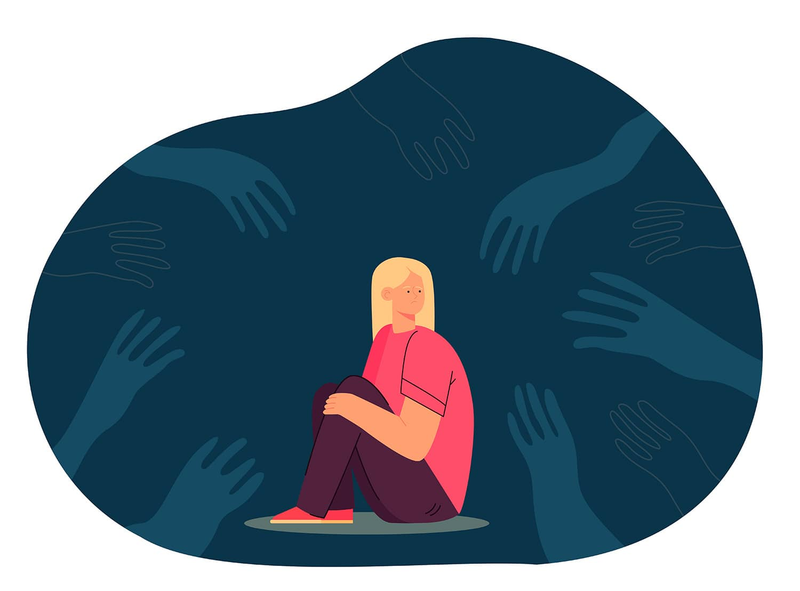

Historia y Teorías Fundamentales: Del Tabú a la Ciencia
El suicidio se mantiene en Colombia como una de las principales causas de muerte, con más de 3.000 víctimas al año —cerca de 200 de ellas menores de edad— y un 17 % de adolescentes que ha buscado en internet “cómo quitarse la vida”. Comprender este fenómeno exige recorrer siglos de visiones morales, descubrimientos científicos y realidades sociales que confluyen en un sufrimiento profundo. El Colegio Kimy Pernía asume el desafío de poner al alcance de su comunidad educativa una investigación exhaustiva, dividida en cuatro grandes bloques: historia y teoría; causas y factores de riesgo; señales de alerta; y prevención, apoyo y atención inmediata.
Desde la Antigüedad, el suicidio fue interpretado de modos contrapuestos. En la Grecia clásica, pensadores como Sócrates y Séneca consideraban la muerte voluntaria como una elección racional ante el sufrimiento insostenible. Esta perspectiva, si bien minoritaria, ofrecía un contrapunto a la visión que posteriormente dominaría. No obstante, la visión dominante pronto viró hacia la condena: con el auge del cristianismo, especialmente durante la Edad Media, el suicidio pasó a ser un 'pecado mortal'. La Iglesia Católica imponía castigos simbólicos —la negación del entierro cristiano, la exhumación de cuerpos— y moralizaba la conducta como señal de debilidad o herejía. Este enfoque estigmatizante no solo silenciaba cualquier intento de análisis empático o clínico, sino que también impedía el desarrollo de un entendimiento más profundo de las causas subyacentes, relegando a las víctimas y sus familias a la marginación y la vergüenza.
Émile Durkheim y el Enfoque Sociológico
El siglo XIX marcó un punto de inflexión crucial en el estudio del suicidio con la publicación de la obra seminal 'Le Suicide' (1897) de Émile Durkheim. Este sociólogo francés fue pionero al introducir un 'enfoque sociológico' riguroso, despojando al fenómeno de su velo puramente moral o individual para analizarlo como un hecho social. Durkheim demostró, a través de un análisis estadístico sin precedentes, que las tasas de suicidio variaban significativamente entre diferentes grupos sociales y que factores estructurales de la sociedad tenían un impacto directo y medible. Su teoría revolucionaria clasificó el suicidio en cuatro tipos fundamentales:
- 'Suicidio Egoísta': Resulta de una falta de integración social. Ocurre cuando los lazos sociales son débiles y el individuo se siente aislado y desconectado de su comunidad, sintiendo que no pertenece.
- 'Suicidio Altruista': Contrario al egoísta, surge de un exceso de integración social y una obligación extrema hacia el grupo. El individuo sacrifica su vida por el bien de una causa o una colectividad, como en el caso de un soldado que se inmola por su nación.
- 'Suicidio Anómico': Se produce en momentos de crisis de normas o valores sociales, cuando hay una desregulación en la sociedad (anomia). Esto puede ocurrir durante crisis económicas o cambios sociales bruscos que desestabilizan las expectativas de los individuos.
- 'Suicidio Fatalista': Aunque menos desarrollado por Durkheim, este tipo se refiere a situaciones de opresión extrema y regulación excesiva, donde el individuo siente que su vida está rígidamente controlada y no tiene escapatoria, como en prisiones o sociedades totalitarias.
La obra de Durkheim sentó las bases para comprender el suicidio más allá del individuo, reconociendo la influencia de los 'factores sociales estructurales' y abriendo el camino para un estudio multidisciplinario del fenómeno.
La Mirada Psicoanalítica y el Avance Psiquiátrico
A principios del siglo XX, la perspectiva evolucionó nuevamente con las contribuciones de Sigmund Freud y el surgimiento del psicoanálisis. Freud aportó una visión interna, interpretando el suicidio como una forma de 'autoagresión', el resultado de pulsiones destructivas (Tánatos) dirigidas hacia el propio yo. Esta autoagresión, según su teoría, podría derivar de conflictos inconscientes, duelos no resueltos o una severa crítica del superyó hacia el ego. Con este nuevo marco, la psiquiatría emergente comenzó a reconocer formalmente el suicidio no solo como un acto social, sino también como un 'síntoma de trastornos mentales subyacentes'. Enfermedades como la depresión, el trauma psicológico, las psicosis y otros desórdenes mentales fueron identificados como factores clave, dando paso a un abordaje médico y terapéutico que buscaba tratar la raíz psicológica del sufrimiento.
Avances Modernos y el Reconocimiento Global
Con la segunda mitad del siglo XX y el avance de la ciencia, las 'terapias cognitivo-conductuales (TCC)' y el desarrollo de la 'farmacología' (especialmente los antidepresivos y estabilizadores del ánimo) demostraron ser herramientas eficaces en la reducción significativa de la ideación suicida. Estos tratamientos, combinados con un enfoque más holístico que incluye el apoyo social y la psicoeducación, comenzaron a ofrecer nuevas esperanzas para quienes sufrían. El punto culminante de este reconocimiento global llegó en 1999, cuando la 'Organización Mundial de la Salud (OMS)' declaró el suicidio como un 'problema de salud pública global', instando a los países a tomar medidas activas. En 2014, la OMS lanzó una estrategia integral que abarca la educación pública, el acceso universal a servicios de salud mental de calidad, el control de medios letales y, fundamentalmente, la 'eliminación del estigma' asociado al suicidio y a los problemas de salud mental. Este cambio de paradigma busca crear un entorno donde la ayuda sea accesible y aceptada, y donde el sufrimiento silencioso pueda ser identificado y abordado a tiempo.
La historia del suicidio es un reflejo de nuestra evolución como sociedad: desde la condena moral hasta la comprensión científica y la acción colectiva. Cada paso ha sido crucial para desestigmatizar y prevenir esta tragedia.